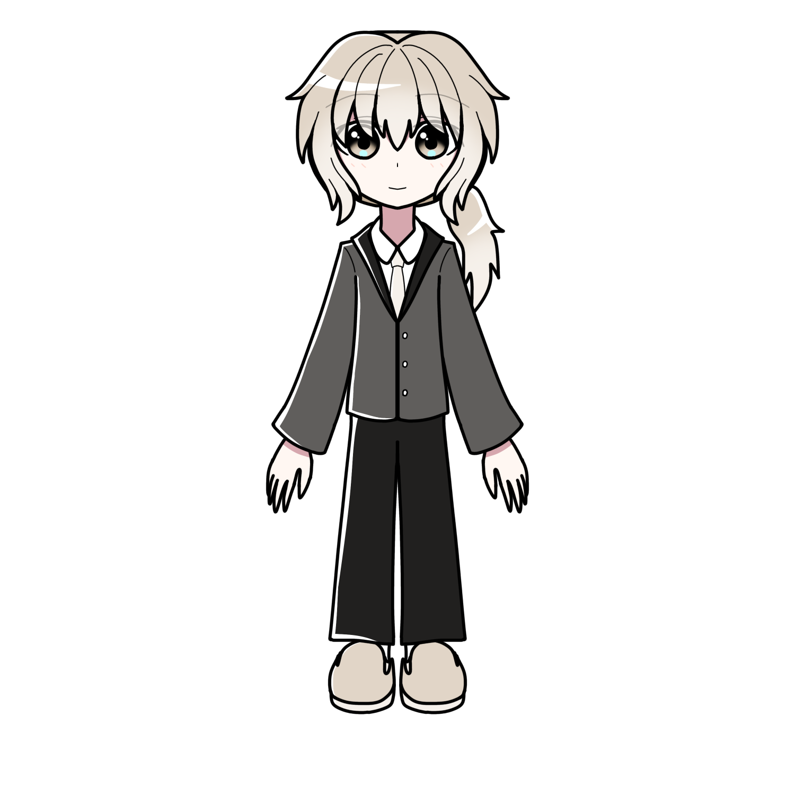

七五三 りつ

七五三りつ（ナゴミ リツ）とは
プリズムアミュレットに登場するメインキャラクターの一人である。
概要
本名は「七五三律」
「Aegisprimus（イージスプリムス 略してAP」の一人。
プロフィール
| 種族 | 人間 |
|---|---|
| 性別 | 男性 |
| 年齢 | 25歳 |
| 誕生日 | 2月4日 |
| 身長 | 173cm |
| 血液型 | |
| 出身 | 東京都 |
| イメージカラー | 灰色・茶色 |
| イメージCV | 内山昂輝 |
人物像
外見
亜麻色の髪色をしている。
光の当たり方や人の見え方によって、
茶髪にも銀髪にも見える。
いわゆる猫っ毛であり、
全体的にふんわりした髪型。
性格
人当たりがよく、
常に落ち着いていて穏やかそうな雰囲気を醸し出している。
また、ひょうきんな所もあり、
上記の理性的なイメージを逆手にとって大ボケに回ることも多い。
しかし、どこか底が知れない不気味さもあり、
「胡散臭い」「怪しい」とも思われている。
実際、この雰囲気は、他者の信頼を得るための
演技とも言える。
本性を現した際には、一転して非情な様子を見せる。
己の目的のためなら、邪魔者を陥れ排除することも
厭わない冷酷な面を持ち合わせている。
そのため、りつを嫌ったり敵対する人が多い。
行動の根本は正義感によるもので、
地球の人々や仲間のために動き、
彼らのためなら、と自分自身を犠牲にしてしまうこともある。
りつの性格をどの程度知っているかで彼への印象が二転三転しがち。
活動目的が「戦いを楽しみたい」というカイと比べ、
利他主義的である。
「霧ヶ峰那由多（キリガミネ ナユタ）」という名でFPSゲームをすることもある。
最近ハマっているのが傘のコレクション。
色々なデザインがあるので並べてみると面白い、
とのこと。
オムライスやコーラが好き。
小豆やピーナッツが苦手。
小豆は「水分が奪われる感覚がする」
ピーナッツは「妙にツンとした味がする」から苦手だそう。
口調
一人称は「僕」
普段はおっとりとした中性口調で話す。
気心知れた相手にはちょっと砕けた男性口調にあることも。
能力
ファニリシアにある物を素材として、
地球の最先端の技術を用いて作られた、
近未来のオーバーテクノロジーの銃を愛用している。
APの中では最も体力がある。
経歴
活躍
人物関係
手代木 カイ
APのメンバー。
幼馴染ということもあって互いを信頼し合っている。
りつはカイに対してやや甘いところがある。
しかしもしも平和のためにカイを殺さなくてはならない、
という場合にはカイを殺す判断を躊躇いなく下せる。
りつはそういう人物であるとカイも理解しているらしい。